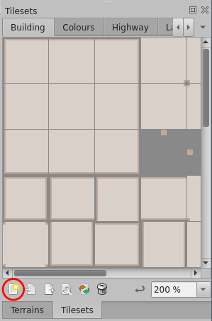
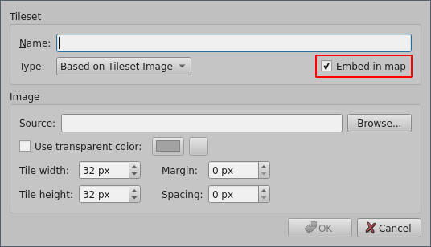
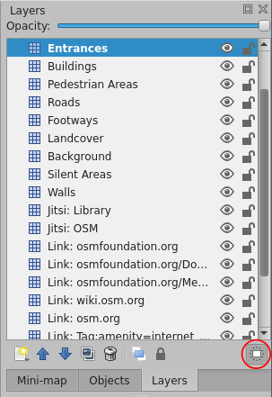
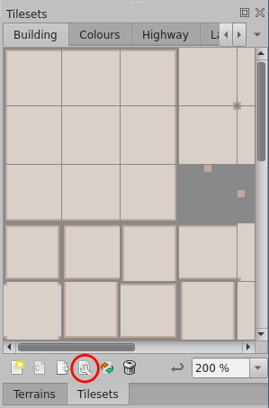
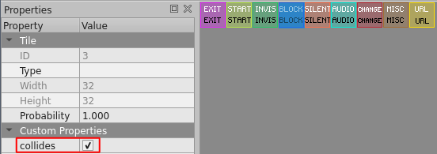
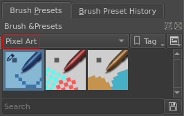
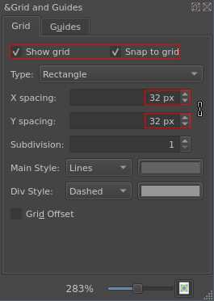
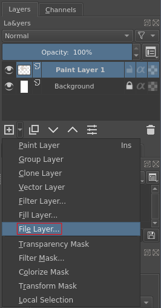

Introduction to WorkAdventure
Tilesets
- PNGs that contain 32x32 px tiles
- Maps are drawn using these tiles
- Map elements may span more than one tile
-
Some sample tilesets:
Tiled
- https://www.mapeditor.org/
- Used to build maps
- Supports more features than WorkAdventure
-
Maps must be...
- ... saved as JSON for use with WorkAdventure
- ... orthogonal and tiles size should be 32x32
Add Tileset
- Tilesets must be embedded


Layers
- Group different kinds of map elements
-
Also used to add interactivity/functionality via layer properties
- Put a tile where something should happen
- Only tile layers (and one special object layer) supported by WorkAdventure
- Layers can be highlighted

Required Layers
floorLayer- Layer where avatar resides, the special object layer
start- Non-empty layer where avatar gets put by default when entering map
Special Layers I
- Exits
-
exitUrl string property- Start layer at target selectable using
#<layer name> suffix/anchor
- Entry points
-
- Boolean
startLayer property
- Layer name can be used as target
<layer name> for exits
- Use different tiles for start and exit
Special Layers II
- Websites
-
openWebsite string propertyopenWebsiteTrigger string property with onaction requires key press- Website must allow being displayed in frame
- Jitsi rooms
-
jitsiRoom string propertyjitsiTrigger string property with onaction requires key press
Collisions
- Boolean
collides property on single tiles


Krita I
- https://krita.org/
- Raster graphics editor suitable to create tilesets
-
Special brushes for pixel art:

Krita II
-
Use 32x32 px grid (or a smaller power of 2, but with larger subdivision):

Krita III
-
Use file layers to assemble larger tilesets from smaller ones:

General hints
- Think of how the map should look like before starting in Tiled, maybe prototype in a vector drawing program
- Think about a convention for layer names, especially entry points and exits
- Use utility tiles on special layers
- Mark areas used as entry and their surroundings as silent